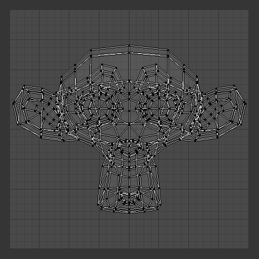

编辑UV¶
展开之后，要对UV进行整理，使之可以有逻辑地进行贴图或绘制。编辑要达到的效果是：
- 将一些碎片(UV)重新缝合到一起。
- 最大化地利用图像空间。
- 对细节面进行放大。
- 调整/缩放被拉伸的面。
- 缩小过于粗糙和细节过多的面。
使用最小的给定空间，让大多数像素点给予UV贴图尽可能多的细节和精度。一个UV面可以小到一个像素(组成整张图像的小点)大小，也可以达到填满整个图像。你可能需要先做一些大的调整，然后再对布局进行微调。
变换¶
- 平移
G - 旋转
R - 缩放
S - 切变
UV选项¶
- 实时展开
- 移动钉固点时，持续展开所选UV孤岛。
- 吸附至像素点
- 载入图像后，强制UV顶点吸附至最近像素点。
- 约束至画布边缘
- 开启 约束至画布边缘 ，阻止UV顶点被移出 0 到 1 UV范围。
钉固和取消钉固¶
参考
P / Alt-P钉固UV可以防止多次展开操作后的UV顶点移动。在模型展开时，有时需要 “锁定” 特定的UV顶点，以使部分UV保持原本形状和/或原本位置。选择UV，然后选择UV菜单的钉固选项或快捷键 P ，即可钉固UV。快捷键 Alt-P 用于 取消钉固。
在对生物体展开UV时，钉固是十分高效的。使用 镜像修改器 建模就是一个例子。镜像轴上的UV顶点是与其镜像部分共用的。可以钉固中心线对应的UV顶点，然后将其X轴对齐，固定这些顶点的位置。
钉固还可以配合实时展开工具使用。钉固两个或更多UV顶点，开启实时展开，拖动被钉固的UV可以交互展开模型。这有助于UV孤岛匹配特定形状或区域。
缝合线¶
- 标记缝合线
- ToDo.
- 清除缝合线
- ToDo.
- 沿孤岛边线生成缝合边
- ToDo.
拼排孤岛¶
参考
Ctrl-P拼排孤岛 工具用于生成无重叠的最优UV布局，试图充分填充纹理空间。
首先，它会统一缩放选中的UV孤岛，然后分别变换每个孤岛，尽可能填满整个UV空间。
镜射¶
参考
Ctrl-M可以通过X轴或Y轴镜射UV:
- 镜射X
- 镜射Y
也可以使用快捷键 Ctrl-M, 然后输入 X 或 Y, 或者按住 MMB 并拖动选择镜射方向。
吸附¶
Snapping in the UV/image editor is similar to Snapping in 3D. For the snap to pixel options to work an image has to be loaded.
- 选中项到像素点
- 移动选中UV顶点至最近像素点。参考上文 吸附至像素点。
- 选中项到游标
- 移动选中项到2D游标位置。
- 选中项到像素点(偏移)
- 移动选中项到2D游标位置，但保持选中顶点与中心点的距离。
- 选中项到临近未选项
- 移动选中项到临近(共用顶点)的未选中元素。
- 游标到像素点
- 吸附游标至最近像素点。
- 游标到选中项
- 移动游标至选中项中心点。
衰减编辑¶
UV编辑可以使用衰减编辑。控制方式与3D视图相同。 参考 3D视图中的衰减编辑。
显示/隐藏面¶
- 恢复显示隐藏项
Alt-H - 隐藏选中项
H - 隐藏未选项
Shift-H
导出UV布局图¶
导出UV布局，使用喜欢的图像绘制程序制作贴图。保存修改，然后回到Blender，使用 载入作为网格的目标(与活动)UV映射的贴图。
Blender提供 导出UV布局图 (位于UV/图像编辑， )工具，存储布局为 PNG (.png), EPS, 或 SVG 格式图像，作为与绘制贴图的艺术家交流的方式。
该图像是UV映射的面轮廓。激活该工具，进入文件浏览器界面，保存选项有:

导出选项。
- 所有UV
- 如不勾选，仅输出选中的UV面轮廓
- 修改器影响
- 输出UV时考虑修改器的影响。
- 格式
- 选择保存的图像格式(
.png,.eps,.svg) - 大小
- 选择图像尺寸，单位像素。图像是方形的。
- 填充的不透明度
- 设置填充的不透明度。
图像输出的是位于UV映射区域的图像区域的UV边线。位于边界之外的边线，即使选中，也不会在保存的图像中显示。
艺术家可以将该图像作为绘图程序的透明图层，引导贴图绘制。下面的例子左侧是Blender中的UV布局，右侧是在GIMP中使用保存的布局引导贴图绘制。注意 png 格式支持透明通道，所以可以直接绘制网格的透明部分。
关于如何使用图像作为贴图，参考 图像贴图 页面。

UV/图像编辑器中的UV布局。 |

绘制程序中的UV布局图。 |
{kind=link}